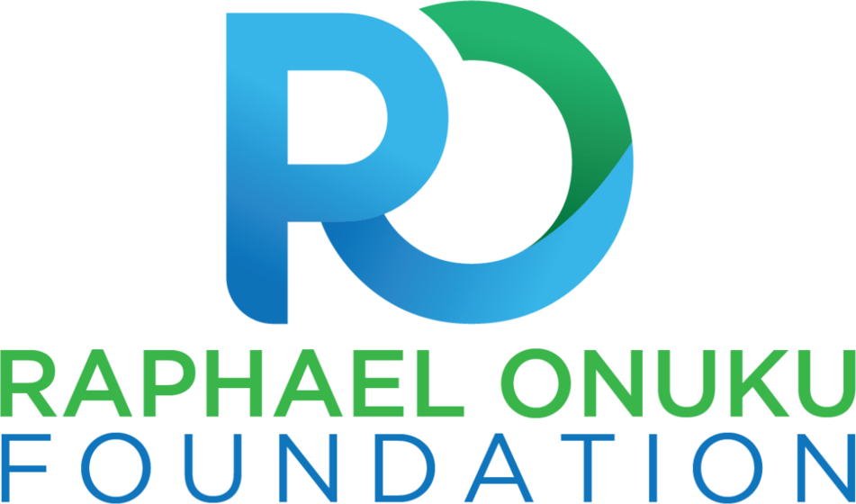
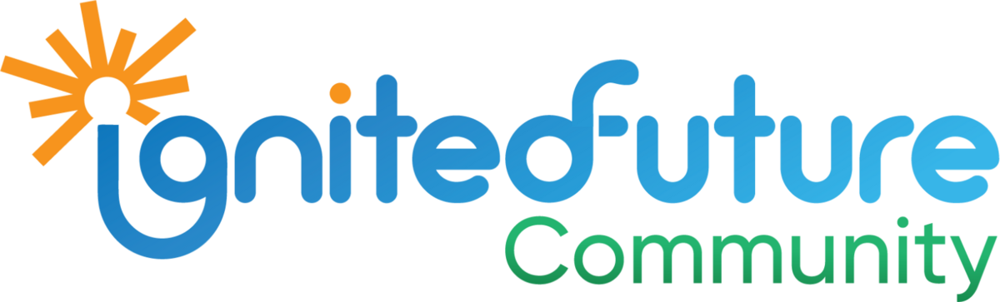

Mentorship and impact
Talent is everywhere. Access is not.
I use mentorship, community, and practical guidance to help students convert academic potential into opportunity.
Raphael Onuku Foundation


I serve as Founder and Executive Director of the Raphael Onuku Foundation, an education-focused nonprofit supporting underserved and ambitious young people through mentorship, scholarship guidance, community engagement, and educational outreach.
The Foundation’s IgnitedFuture Community creates a space where students can learn from scholars who have navigated international admissions, research training, and competitive scholarships.
Mentorship in practice
My approach focuses on concrete preparation. Participants learn how to identify suitable programs, assess scholarship requirements, prepare application materials, communicate with potential supervisors, and build credible academic profiles.
Leadership
My service has included elected representation for Biological and Health Sciences in Rackham Student Government, membership on the University of Michigan Ginsberg Center Student Advisory Board, and service as President of the Taipei Medical University International Students Association.
Across these roles, the common goal has been to make institutions easier to navigate and opportunities easier to understand.
Information becomes impact when someone can act on it.
Collaboration with educators, mentors, donors, and community partners can extend the reach of this work.